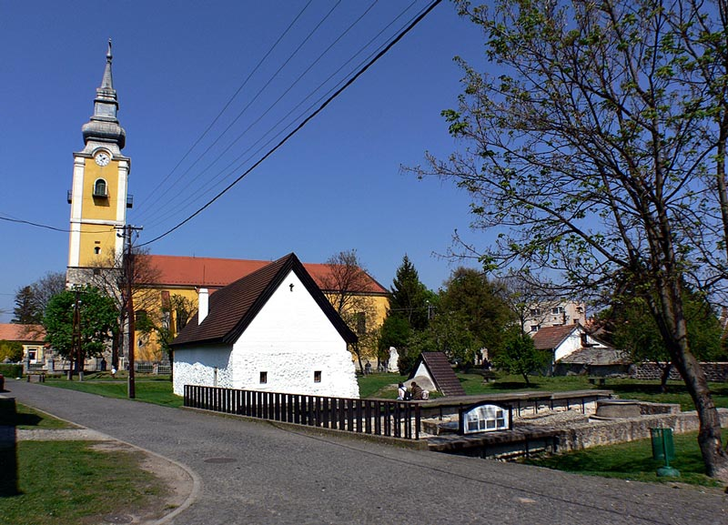
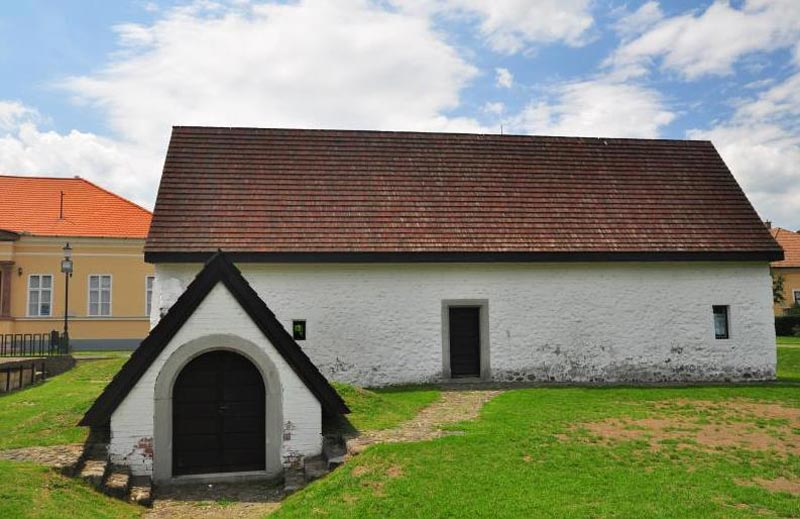
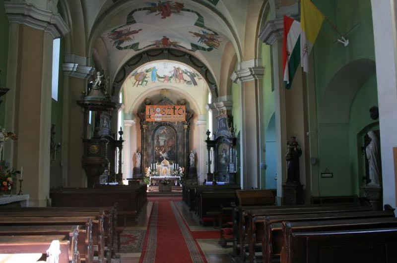
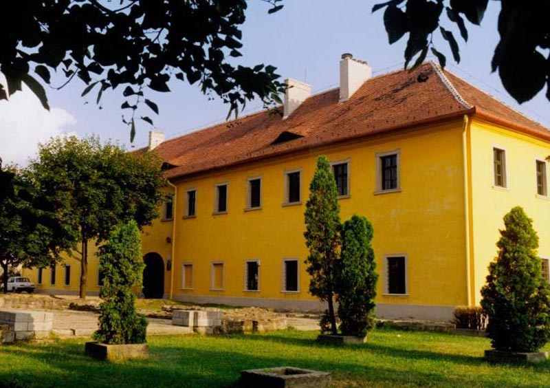
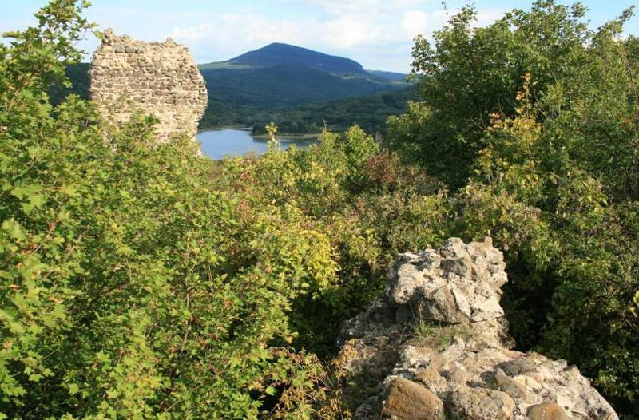
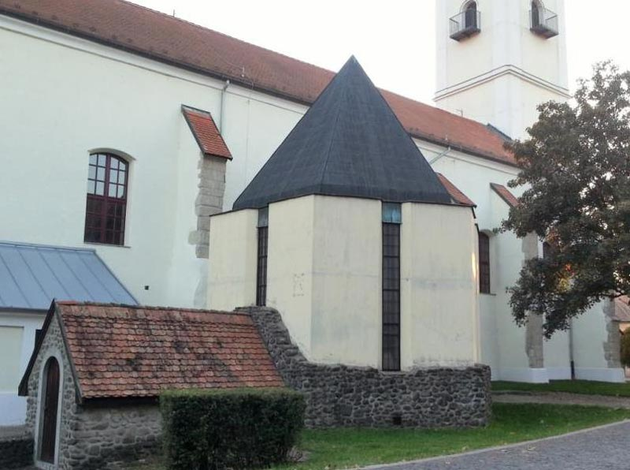
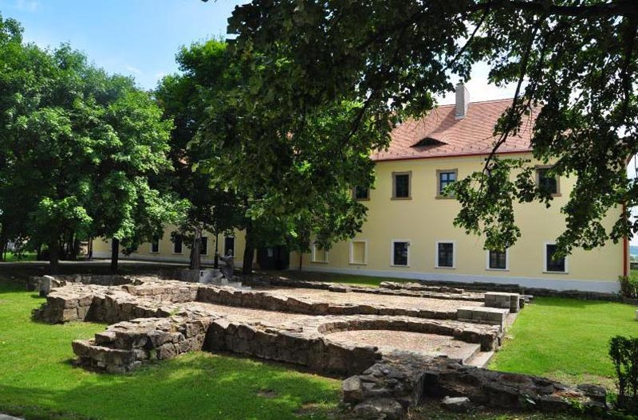
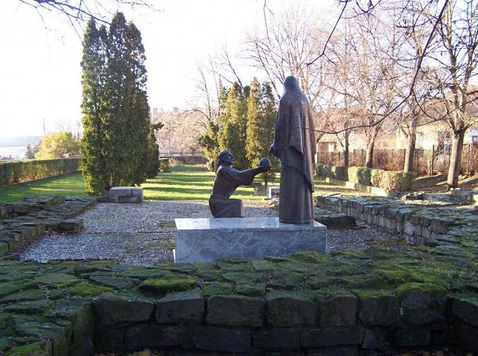

【美景】
早在1298年，帕斯托获得举办博览会的权利，由此进入了鼎盛时期。 帕斯托的塞斯托里城堡起源可以追溯到14世纪初。 帕斯托的中世纪的玻璃厂遗迹可以追溯到1230年左右。
【美食】
Goulash牛肉炖汤
Libamáj 鹅肝
Lángos特色油饼
Toltott Kaposzta 圆白菜肉丸
Halászlé 鱼汤
Ujhazi Tyukhuslevesi 家常老鸡汤
Kurtoskalacs 烟囱卷面包
Egri Bikavér埃格尔公牛血葡萄酒
帕斯托
帕斯托是位于匈牙利北部的城镇，属于诺格拉德州管辖，面积72.6平方公里，人口9,626，其中约八成居民信奉天主教。帕斯托和匈牙利语牧羊人的拼写很像，我们可以通过这个有趣的方法来记住城市名字。 1715年，摩拉维亚的西多会修士们拥有利奥波德一世皇帝的捐赠信，并建造了巴洛克式的修道院，该修道院至今仍屹立在那。1298年，帕斯托获得举办博览会的权利。它的鼎盛时期直到被土耳其征服。一百年来，只有烧过的石墙成为这座城市的标志。在1867年它就开通了铁路。1950年，它被并入了诺格拉德县。
景点：帕斯托校长的房子 帕斯托校长的房子位于教区教堂南侧，这座木地板矩形建筑建于15世纪，最初是由安山岩卵石建造的，后根据1793年的地图而建的学校。直到1968年，这里还是现任康托老师的家。该定居点的学校1428年就已经存在，校长的房子位于教堂南侧。

景点：圣劳伦斯教区教堂 圣劳伦斯罗马天主教教区教堂，北侧是一个圣殿，中殿的南侧是一个小教堂，小教堂的多边形封闭处装有量具窗。北教堂墙和南教堂墙由扶壁支撑。在西立面的展位上，有一个巴洛克式的玛丽雕像，在其外立面上有牧人和圣劳伦斯的雕像。该教区教堂于1421年进行了翻新，15世纪上半叶又进行了翻修。

景点：帕斯托博物馆 帕斯托博物馆于1984年10月1日开始运作，该机构的成立与帕斯托的“校长之家”的启用有关。校长之家最初建于十五世纪。校长住宅附近挖掘出的中世纪玻璃制冷和铁匠作坊也成了露天展览场所。这是匈牙利独特的工业历史遗迹。帕斯托博物馆于1717-1718年重建。

景点：塞斯托里城堡 塞斯托里城堡是细长的矩形城堡。它建在城堡山顶部的西北侧，海拔333m。这座城堡被10米宽的沟渠所环绕。城堡的核心是防御系统的中心，是一座古老的塔楼，它的起源可以追溯到14世纪初。

景点：六角形教堂 圣劳伦斯教区教堂的北侧是两层小教堂，该教堂的较低层是由瓦尔特•伊洛娜领导的考古研究在1980年代初期发掘的。在礼拜堂东侧，石砌楼梯尽头石框架，无肋的拱顶，上层有一个彩绘的带肋拱顶。

景点：巴洛克修道院 修道院建筑是一层，门的平板上有一个四节抽屉式保险柜。修道院有一个拱形的山墙屋顶和一个可以从南立面进入的拱形地窖。一楼的窗户很简单，楼上的窗户是用框架制成的。 楼梯和底楼的房间部分为拱形，而较高的楼层则覆盖有平坦的楼板。在酒窖内部入口处可以看到1845年帕斯托博物馆就位于巴洛克修道院建筑中。该建筑物的外墙及拱形酒窖在2011年全面翻新并建立了博物馆教学培训室。 
景点：中世纪修道院（废墟花园） 中世纪修道院于1965年至1968年之间发掘，中世纪城墙的遗迹在巴洛克修道院的北部和西部。这个长38.4 m，宽21.8 m的三通道教堂，没有交叉教堂，直到封闭的主神殿和半圆形封闭的神殿。在18世纪的美化环境中，仅保留了很少的中殿部分，建筑物的两个部分通过一条平行于南教堂墙的走廊相连。该建筑在13世纪初被西多会修道院扩大，修道院在西侧扩展了一个房间，但并未建造四面体。

景点：中世纪的玻璃厂遗迹 中世纪的玻璃厂遗迹位于学校校长的房子的南侧，长20m宽7m的两居室石材建筑。它于1986年发掘，墙壁残留物的顶部覆盖有一层燃烧层。燃烧层的时间可以追溯到1230年左右。考古挖掘过程中，发现了三个窑炉基地，是用于玻璃生产的三重炉系统的基本设施：预热，成形和回火炉并发现了玻璃渣和绿色玻璃块。它是匈牙利独特的工业历史遗迹，也是中欧最早的和挖掘的玻璃熔化车间之一。